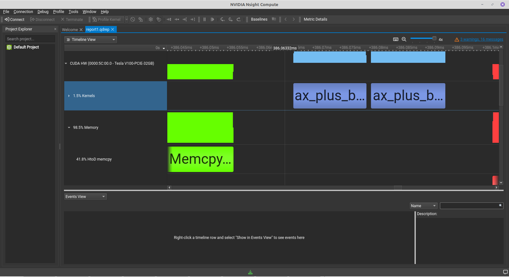

Profile GPU Codes from AQUA Cluster
While it is easier to code and profile on local machine/server. It involves some work on remote machines and ever more work on remote clusters. Helped Smit profiling on Tensor cores codes on V100.
- While profiling from a remote cluster (multiple hops) is challenging But we have a solution!
- Always us
-lineinfowhile compilingnvcc. Use-arch=sm_86or-arch=sm_70for tensors. nsys profile ./a.outto profile- Export the generated files
*.nsys-repfile locally and import into Nsight Compute. - Visualise and analyse.

Learn-ings
qdstrm is an intermediate result one needs to use QdstrmImporter to convert to qdrep file. I’ll leave it here. No time to explaing. Below log is self-explanatory if you are working on AQUA cluster.
Raw logs
cs16d003 aqua SSH ~ temp $ ll
total 29473
-rw-r--r-- 1 cs16d003 rupeshgrp 628 Feb 14 03:53 a.cu
-rwxr-xr-x 1 cs16d003 rupeshgrp 756848 Feb 14 03:53 a.out
-rw------- 1 cs16d003 rupeshgrp 1573 Feb 14 03:53 cmdsErrorLog.err
-rw------- 1 cs16d003 rupeshgrp 4336 Feb 14 03:53 cmdsOutputLog.log
-rw-r--r-- 1 cs16d003 rupeshgrp 29920832 Feb 14 03:53 report1.qdstrm
-rw-r--r-- 1 cs16d003 rupeshgrp 329926 Feb 14 03:53 report2.qdrep // This was generated.
-rwxr-xr-x 1 cs16d003 rupeshgrp 573 Feb 14 03:53 run.sh
cs16d003 aqua SSH ~ temp $ qsub run.sh
1225506.hn1
cs16d003 aqua SSH ~ temp $ cat run.sh
#!/bin/bash
#PBS -e cmdsErrorLog.err
#PBS -o cmdsOutputLog.log
#PBS -q rupesh_gpuq
#PBS -l select=1:ncpus=1:ngpus=1
tpdir=`echo $PBS_JOBID | cut -f 1 -d .`
tempdir=$HOME/scratch/job$tpdir
mkdir -p $tempdir
cd $tempdir
cp -R $PBS_O_WORKDIR/* .
module load cuda11.4
module load gcc640
echo ==========
nvcc --version
echo ==========
nvidia-smi
echo ==========
pwd
cat /proc/driver/nvidia/version
echo ==========
nvcc a.cu
./a.out
echo ==========
nsys --version
nsys profile ./a.out
echo ==========
#./sssp market test_mst.mtx
#rm a.out
mv * $PBS_O_WORKDIR/.
rmdir $tempdir
cs16d003 aqua SSH ~ temp $ cat a.cu
#include <cuda.h>
#include <stdio.h>
#define gpuErrchk(ans) \
{ gpuAssert((ans), __FILE__, __LINE__); }
inline void gpuAssert(cudaError_t code, const char *file, int line,
bool abort = true) {
if (code != cudaSuccess) {
fprintf(stderr, "GPUassert: %s %s %d\n", cudaGetErrorString(code), file,
line);
if (abort) exit(code);
}
}
__global__ void k() {
printf("hello %u!\n", threadIdx.x);
}
int main(void) {
k<<<3, 32>>>();
cudaDeviceSynchronize();
gpuErrchk(cudaPeekAtLastError());
return 0;
}
cs16d003 aqua SSH ~ temp $ ls -lrt
total 2041
-rw-r--r-- 1 cs16d003 rupeshgrp 1483 Feb 14 11:52 b.cu
-rwxr-xr-x 1 cs16d003 rupeshgrp 756848 Feb 14 11:52 a.out
-rw-r--r-- 1 cs16d003 rupeshgrp 628 Feb 14 11:52 a.cu
-rwxr-xr-x 1 cs16d003 rupeshgrp 760936 Feb 14 11:52 b.out
-rwxr-xr-x 1 cs16d003 rupeshgrp 612 Feb 14 12:45 run.sh
cs16d003 aqua SSH ~ temp $ qsub run.sh
1225693.hn1
cs16d003 aqua SSH ~ temp $ ll
total 2600
-rw-r--r-- 1 cs16d003 rupeshgrp 628 Feb 14 11:55 a.cu
-rwxr-xr-x 1 cs16d003 rupeshgrp 756848 Feb 14 11:55 a.out
-rw-r--r-- 1 cs16d003 rupeshgrp 1483 Feb 14 11:55 b.cu
-rwxr-xr-x 1 cs16d003 rupeshgrp 760936 Feb 14 11:55 b.out
-rw------- 1 cs16d003 rupeshgrp 1573 Feb 14 11:55 cmdsErrorLog.err
-rw------- 1 cs16d003 rupeshgrp 3014 Feb 14 11:55 cmdsOutputLog.log
-rw-r--r-- 1 cs16d003 rupeshgrp 329386 Feb 14 11:55 report1.qdrep
-rwxr-xr-x 1 cs16d003 rupeshgrp 612 Feb 14 11:55 run.sh
cs16d003 aqua SSH ~ temp $ vim b.cu
cs16d003 aqua SSH ~ temp $ ll
total 2600
-rw-r--r-- 1 cs16d003 rupeshgrp 628 Feb 14 11:55 a.cu
-rwxr-xr-x 1 cs16d003 rupeshgrp 756848 Feb 14 11:55 a.out
-rw-r--r-- 1 cs16d003 rupeshgrp 1483 Feb 14 11:55 b.cu
-rwxr-xr-x 1 cs16d003 rupeshgrp 760936 Feb 14 11:55 b.out
-rw------- 1 cs16d003 rupeshgrp 1573 Feb 14 11:55 cmdsErrorLog.err
-rw------- 1 cs16d003 rupeshgrp 3014 Feb 14 11:55 cmdsOutputLog.log
-rw-r--r-- 1 cs16d003 rupeshgrp 329386 Feb 14 11:55 report1.qdrep
-rwxr-xr-x 1 cs16d003 rupeshgrp 612 Feb 14 11:55 run.sh
cs16d003 aqua SSH ~ temp $ cat cmdsErrorLog.err
Warning: LBR backtrace method is not supported on this platform. DWARF backtrace method will be used.
Collecting data...
Processing events...
Saving temporary "/var/tmp/pbs.1225693.hn1/nsys-report-5497-a5fc-aa58-cf91.qdstrm" file to disk...
Creating final output files...
Processing [===============================================================100%]
Saved report file to "/var/tmp/pbs.1225693.hn1/nsys-report-5497-a5fc-aa58-cf91.qdrep"
Report file moved to "/lfs1/usrscratch/phd/cs16d003/job1225693/report1.qdrep"
cs16d003 aqua SSH ~ temp $ cat cmdsOutputLog.log
==========
nvcc: NVIDIA (R) Cuda compiler driver
Copyright (c) 2005-2021 NVIDIA Corporation
Built on Sun_Aug_15_21:14:11_PDT_2021
Cuda compilation tools, release 11.4, V11.4.120
Build cuda_11.4.r11.4/compiler.30300941_0
==========
Wed Feb 14 11:55:19 2024
+-----------------------------------------------------------------------------+
| NVIDIA-SMI 470.57.02 Driver Version: 470.57.02 CUDA Version: 11.4 |
|-------------------------------+----------------------+----------------------+
| GPU Name Persistence-M| Bus-Id Disp.A | Volatile Uncorr. ECC |
| Fan Temp Perf Pwr:Usage/Cap| Memory-Usage | GPU-Util Compute M. |
| | | MIG M. |
|===============================+======================+======================|
| 0 Tesla V100-PCIE... Off | 00000000:5C:00.0 Off | 0 |
| N/A 32C P0 23W / 250W | 0MiB / 32510MiB | 0% Default |
| | | N/A |
+-------------------------------+----------------------+----------------------+
| 1 Tesla V100-PCIE... Off | 00000000:D8:00.0 Off | 0 |
| N/A 32C P0 25W / 250W | 175MiB / 32510MiB | 0% Default |
| | | N/A |
+-------------------------------+----------------------+----------------------+
+-----------------------------------------------------------------------------+
| Processes: |
| GPU GI CI PID Type Process name GPU Memory |
| ID ID Usage |
|=============================================================================|
| 1 N/A N/A 24847 G /usr/bin/X 63MiB |
| 1 N/A N/A 24919 G /usr/bin/gnome-shell 110MiB |
+-----------------------------------------------------------------------------+
==========
/lfs/usrhome/phd/cs16d003/scratch/job1225693
NVRM version: NVIDIA UNIX x86_64 Kernel Module 470.57.02 Tue Jul 13 16:14:05 UTC 2021
GCC version: gcc version 4.8.5 20150623 (Red Hat 4.8.5-36) (GCC)
==========
Results:
2.00 * 0.84 + 3.00 = 4.68
2.00 * 0.39 + 3.00 = 3.79
2.00 * 0.78 + 3.00 = 4.57
2.00 * 0.80 + 3.00 = 4.60
2.00 * 0.91 + 3.00 = 4.82
2.00 * 0.20 + 3.00 = 3.40
2.00 * 0.34 + 3.00 = 3.67
2.00 * 0.77 + 3.00 = 4.54
2.00 * 0.28 + 3.00 = 3.56
2.00 * 0.55 + 3.00 = 4.11
==========
NVIDIA Nsight Systems version 2021.3.2.4-027534f
Results:
2.00 * 0.84 + 3.00 = 4.68
2.00 * 0.39 + 3.00 = 3.79
2.00 * 0.78 + 3.00 = 4.57
2.00 * 0.80 + 3.00 = 4.60
2.00 * 0.91 + 3.00 = 4.82
2.00 * 0.20 + 3.00 = 3.40
2.00 * 0.34 + 3.00 = 3.67
2.00 * 0.77 + 3.00 = 4.54
2.00 * 0.28 + 3.00 = 3.56
2.00 * 0.55 + 3.00 = 4.11
==========
cs16d003 aqua SSH ~ temp $ cat run.sh
#!/bin/bash
#PBS -e cmdsErrorLog.err
#PBS -o cmdsOutputLog.log
#PBS -q rupesh_gpuq
#PBS -l select=1:ncpus=1:ngpus=1
tpdir=`echo $PBS_JOBID | cut -f 1 -d .`
tempdir=$HOME/scratch/job$tpdir
mkdir -p $tempdir
cd $tempdir
cp -R $PBS_O_WORKDIR/* .
module load cuda11.4
module load gcc640
echo ==========
nvcc --version
echo ==========
nvidia-smi
echo ==========
pwd
cat /proc/driver/nvidia/version
echo ==========
#nvcc a.cu
#./a.out
nvcc b.cu -o b.out -lineinfo
./b.out
echo ==========
nsys --version
nsys profile ./b.out
echo ==========
#./sssp market test_mst.mtx
#rm a.out
mv * $PBS_O_WORKDIR/.
rmdir $tempdir
cs16d003 aqua SSH ~ temp $ cat b.cu
#include <stdio.h>
#include <stdlib.h>
#include <cuda_runtime.h>
#define N 1000000
#define BLOCK_SIZE 256
__global__ void ax_plus_b(float *x, float *result, float a, float b) {
int idx = blockIdx.x * blockDim.x + threadIdx.x;
if (idx < N) {
result[idx] = a * x[idx] + b;
}
}
int main() {
float *h_x, *h_result, *d_x, *d_result;
float a = 2.0f, b = 3.0f; // Constants a and b
int size = N * sizeof(float);
// Allocate memory on the host
h_x = (float *)malloc(size);
h_result = (float *)malloc(size);
// Generate random numbers on the CPU
for (int i = 0; i < N; ++i) {
h_x[i] = rand() / (float)RAND_MAX;
}
// Allocate memory on the device
cudaMalloc((void **)&d_x, size);
cudaMalloc((void **)&d_result, size);
// Copy input data from host to device
cudaMemcpy(d_x, h_x, size, cudaMemcpyHostToDevice);
// Launch kernel
int numBlocks = (N + BLOCK_SIZE - 1) / BLOCK_SIZE;
ax_plus_b<<<numBlocks, BLOCK_SIZE>>>(d_x, d_result, a, b);
ax_plus_b<<<numBlocks, BLOCK_SIZE>>>(d_x, d_result, a, b);
// Copy result from device to host
cudaMemcpy(h_result, d_result, size, cudaMemcpyDeviceToHost);
// Verify the results
printf("Results:\n");
for (int i = 0; i < 10; ++i) {
printf("%.2f * %.2f + %.2f = %.2f\n", a, h_x[i], b, h_result[i]);
}
// Free memory
free(h_x);
free(h_result);
cudaFree(d_x);
cudaFree(d_result);
return 0;
}
Tue, 16-Feb-2024, 14:55:46 IST